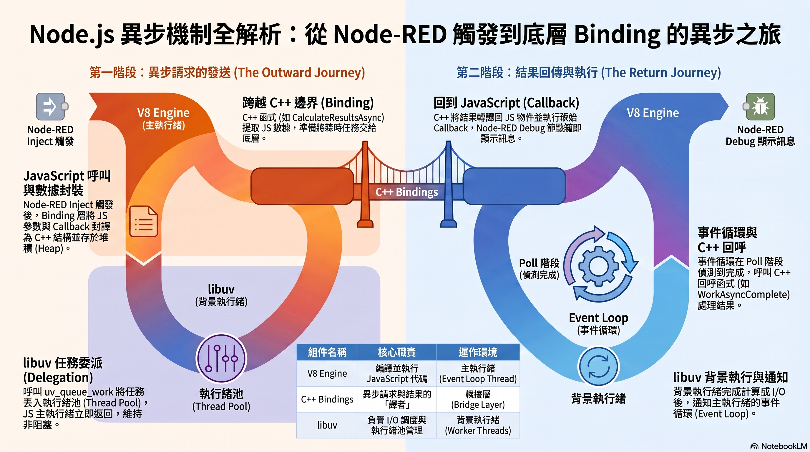
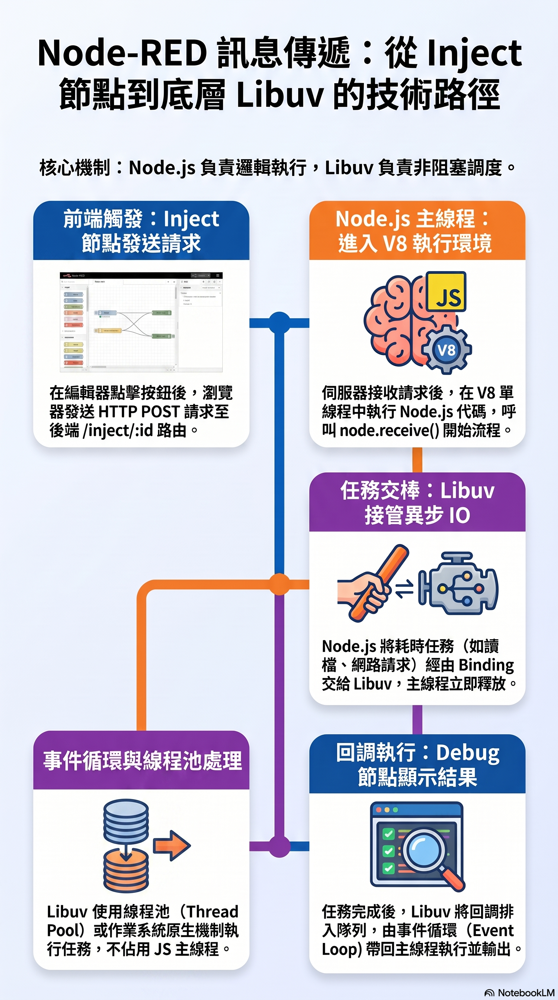

底層核心架構圖解
內嵌高解析度架構圖，拆解異步事件調度與視覺化訊息傳遞管線（支援點擊放大燈箱）

點擊放大檢視
核心機制 01 ・ 非阻塞 I/O
異步程式執行機制解析
解構 Node-RED 能夠在單一執行緒（Single Thread）下輕鬆吞吐數萬個 PLC 通訊封包與 MQTT 數據的底層核心——Node.js V8 引擎與 libuv 非同步事件迴圈協同架構。
- Call Stack (呼叫棧)：同步 JavaScript 程式碼依序推入棧頂執行，執行完畢即刻彈出釋放。
-
C++ Bridge & Worker Pool：耗時的檔案 I/O、PLC 序列通訊或網路請求，立即指派至背景
libuv4 執行緒池處理，不卡死主執行緒。 -
Microtask 插隊機制：
process.nextTick()與 Promise 在各階段切換前擁有最高優先級，能即刻插隊保證關鍵數據即時性。 - 工控黃金準則：Function 節點內絕不可寫死循環或同步耗時等待（如同步 sleep），否則將凍結整個工廠的 SCADA 監控迴圈！

點擊放大檢視
核心機制 02 ・ 視覺化流管線
視覺化工具訊息傳遞路徑
揭開 Node-RED 畫布連線 (Wire) 的底層實體！畫布上的每條線並非魔法，而是 Node.js 執行期註冊的 EventEmitter 事件管線與記憶體指針傳遞過程。
-
事件驅動模型：上游節點觸發
node.send(msg)，透過連線配置觸發下游節點的node.on('input')監聽回調。 -
記憶體引用傳遞 (By Reference)：若一條線分支分流至多個節點，傳入的是同一個記憶體位址；底層透過
RED.util.cloneMessage()深拷貝避免分支間互相竄改。 - Context 儲存分層架構：Node-RED 提供 Node、Flow、Global 三層記憶體狀態管理，可對接記憶體、本地檔案或 Redis 工業快取。
-
Backpressure (背壓機制)：非同步
send(msg)與done()模式，避免高頻感測器塞爆緩衝佇列導致記憶體溢出 (OOM)。
深度教材投影片 (PDF 沉浸式投影放映)
支援切換兩種權威教材，可直接進入劇院全螢幕放映或獨立投影分頁播放
互動式全景與動態簡報 (獨立分頁系統)
點擊下方卡片即可在新分頁開啟互動式 Mermaid 巨觀全景圖與可切換章節的 Presentation 系統
MERMAID 架構全景
新分頁開啟 (Target Blank)
Node-RED & libuv 全鏈路運行全景圖 (巨觀大圖)
由前端編輯器 UI 點擊 Inject 節點出發，沿著 HTTP Admin API、node.receive 佇列、node.send 傳線、C++ Unwrap 橋接、libuv Worker Pool 非同步執行、Poll 階段休眠喚醒到 WebSocket Debug 輸出的完整 12 步跨層次全景流程圖。
核心亮點
互動簡報投影片
新分頁開啟 (Target Blank)
Node-RED 到 libuv：解密 Node.js 事件驅動的核心旅程
專業級現代互動簡報系統！包含章節指示器、鍵盤左右鍵切換投影片、Prism 語法高亮程式碼實作對照、深淺色切換。引領學員從表層拖拉節點直達底層 C++ 與 OS 核心排程的世界。